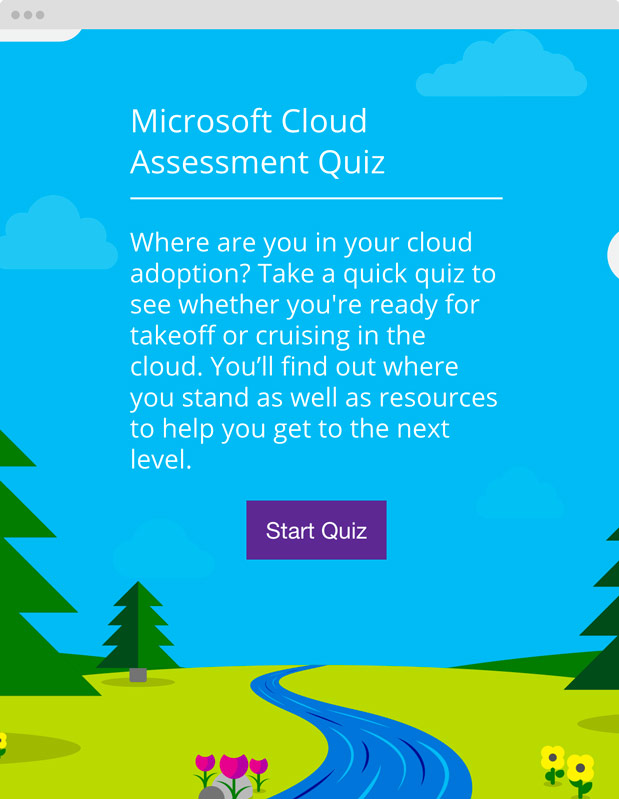
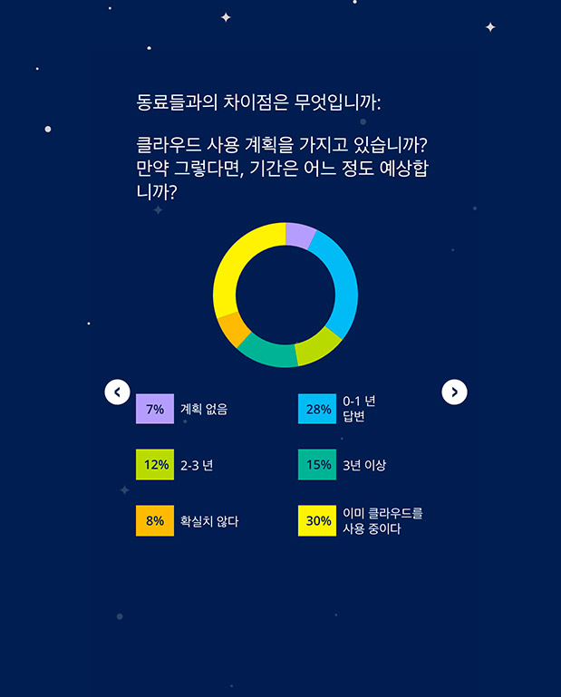
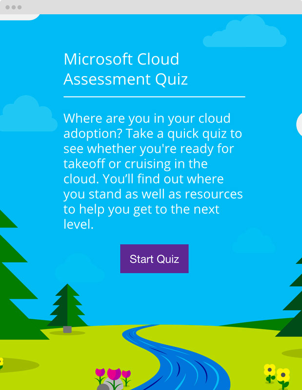
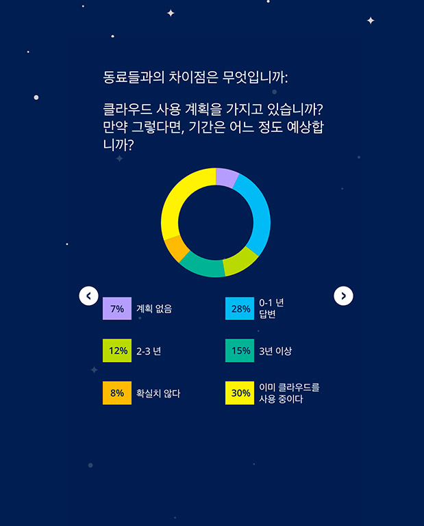

My work.
Microsoft Assessment Quiz
 



Problem
Microsoft was looking to create a fun tool to help IT professionals learn how ready they and their peers are to move to the cloud, as well as provide resources to help them get up to speed if they're not ready. This tool also needed to work in 20 different languages such as Spanish, Russian, Arabic, and Korean to name a few.
Solution
I developed an interactive quiz that assesses where the user stands in terms of cloud-readiness. Through a set of simple multiple-choice questions, the quiz determines the user's situation and give them a cloud ranking along with relevant resources based on their result. As an added bonus, the user can see how their answers compares to their peers.